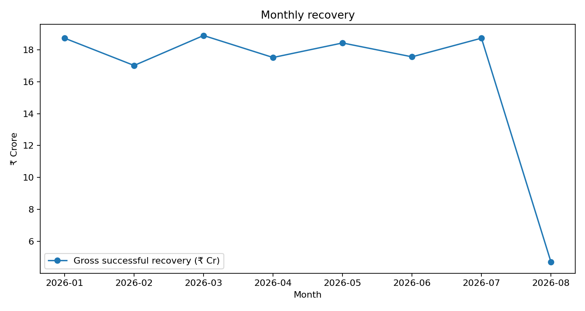
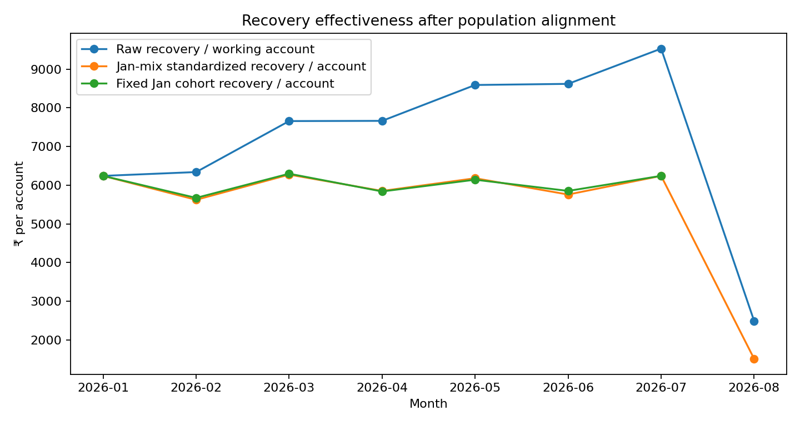

CEO view | Complete Jan–Jul months | August excluded from trend conclusions
Gross recovery is broadly flat. The headline recovery/account ratio rises because the working denominator contracts and is not aligned to the broader payment numerator.


| Check | Result | Class |
|---|---|---|
| Duplicate payments | 500 exact payment_id duplicates; no additional 60-minute near-duplicates | FACT |
| Denominator | Historical terminal status incorrectly treated as permanent; corrected to latest status | FACT |
| Mix | DPD × risk × geography standardization leaves Jan→Jul flat | STRONG EVIDENCE |
| Fixed cohort | January cohort recovery/account effectively flat | STRONG EVIDENCE |
| Attribution | CALL > WHATSAPP > SMS > FIELD ranking stable across windows | FACT |
| Targeting | No clean historical intervention/control transition identifiable | FACT |
Do not interpret the 11% figure as demonstrated operational improvement. Do not allocate the full ₹10 Cr on observational evidence. Run a stratified randomized targeting experiment; primary KPI = incremental recovered ₹ per eligible account.